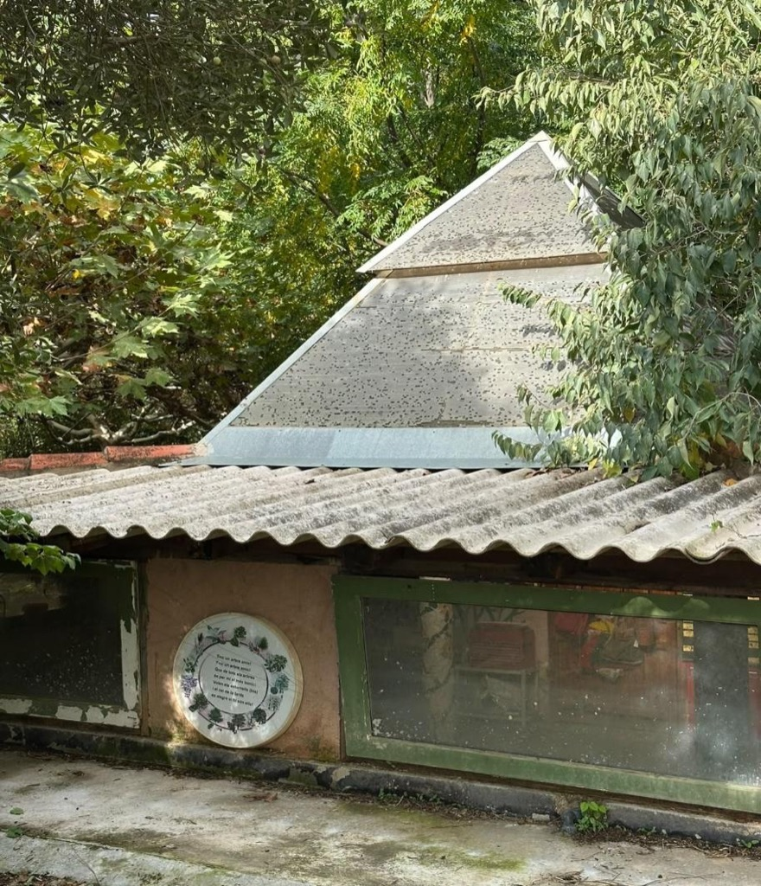

Procházka dovnitř

Vítejte v tomto malém vesmíru přírody, klidu a objevování.
Přišli jste na místo, kde čas může plynout jiným tempem. Tady není třeba spěchat, nikam dojít ani nic dělat určitým způsobem.
Žádáme vás jen o jedno: buďte přítomni.
Po celé zahradě najdete zákoutí, která vás zvou k rozhovoru, k chůzi, ke hře s vůněmi, k naslouchání vodě a možná k objevení něčeho nového o sobě. Některé chvíle jsou ke sdílení, jiné k vychutnání v tichu.
Nechte se vést svými smysly a nechte každé místo, ať k vám promluví po svém. Nehledejte žádný výsledek. Neexistují správné ani špatné odpovědi.
Cesta začíná tady. Zbytek objevíte sami.
Mapa

Vydáváme se na cestu zahradou, kolem jejího středu, po stezkách, které vedou od sdíleného zážitku k osobnímu objevu.
Čtyři zákoutí, čtyři způsoby, jak se spojit s přírodou i se sebou.
- Zákoutí 1: zákoutí slov a přemýšlení.
- Zákoutí 2: vodní stezka.
- Zákoutí 3: hra vůní.
- Zákoutí 4: proměna.
Jděte trasou bez spěchu: zastavte se, dýchejte, dívejte se, nechte se překvapit.
Voňavé oblouky vás provedou z jednoho místa na další. Podél stezek najdete i další místa, kde si sednout, zazpívat, číst, žasnout nebo se prostě dívat.
Zákoutí 1 · Zákoutí slov a přemýšlení

Sdílet slova a myšlenky, přemýšlet a naslouchat druhým.
Ve stínu lip nám zahrada nabízí místo, kde se zastavit a setkat.
Možná přicházíme ze dnů plných slov, hromadících se myšlenek nebo rozhovorů, které stále odkládáme. Teď máme příležitost sednout si, nadechnout se a naslouchat.
Kolem vás jsou krátké texty s myšlenkami k zamyšlení. Přečtěte si ten, který vás zaujme. Nechte slova v sobě usadit.
Pokud jste ve skupině, můžete se podělit o to, co vám četba přinesla. Můžete také naslouchat ostatním, aniž byste museli odpovídat. Někdy je opravdové naslouchání krásným způsobem, jak někomu dělat společnost.
Není třeba dojít k závěru. Stačí, když nás slovo, myšlenka nebo pohled trochu sblíží.
Zastavte se na chvíli a zeptejte se sami sebe:
Co potřebuji říct? A co potřebuji slyšet?
Nechte rozhovor plynout bez spěchu jako vánek, který prochází listím lip.
Zákoutí 2 · Vodní stezka

Užívat si všech pět smyslů. Jít, cítit své tělo a vnímat zahradu.
Pod lískou a cicimkem se před vámi zahrada otevírá a zve vás, abyste se uvolnili.
Vnímejte, jak se vaše chodidla dotýkají země, jak se tělo pohybuje, jak se přesouvá rovnováha. Naslouchejte dechu a nechte ho udávat tempo. Není kam spěchat a není cíl, kam dojít. Jen radost z přítomnosti.
Až dojdete na konec, chvíli si posedte: čeká na vás místo k odpočinku a pozorování zahrady. Vodopád hraje svou hudbu a voda nabízí svěžest. Rozhlédněte se, poslouchejte vodu a listí, které hladí vánek.
A teď se zeptejte sami sebe:
Co se ve vás po této procházce změnilo?
Možná stačí zavřít oči, zhluboka se nadechnout a cítit, že jste součástí této chvíle.
Zákoutí 3 · Hra vůní

Probudit čich, hrát si a objevit duši přírody v zahradě.
Některé vzpomínky k nám nepřicházejí očima ani slovy. Někdy stačí vůně, aby se v nás něco probudilo.
V tomto zákoutí na vás čeká malá hra na objevování. Vezměte jednu ze skleniček, otevřete ji a jemně k sobě přibližte vůni. Nadechněte se. Zkuste uhodnout, jaká rostlina se v ní skrývá.
Co vám tato vůně připomíná? Zdá se vám povědomá? Vybavuje se vám nějaká vzpomínka? Probouzí zvědavost, klid, radost nebo pocit, který nedokážete úplně pojmenovat?
Až svůj objev uděláte, vyhledejte tu rostlinu v zahradě. Všimněte si jejích listů, tvaru, barvy a toho, kde roste.
Ať vám hra připomene, že objevovat je také způsob, jak se učit dívat. Možná se něco, co se zdálo malé nebo bezvýznamné, náhle stane zvláštním nálezem.
Zeptejte se sami sebe:
Kolik věcí kolem sebe jsem se ještě nenaučil vnímat?
Podělte se o své objevy s ostatními a užijte si překvapení. Nechat se překvapit tu patří k cestě.
Zákoutí 4 · Proměna

Zastavit se, podívat se na sebe a otevřít se změně.
Objevit v sobě motýla
Došli jste do posledního zákoutí zahrady. Tento prostor je jen pro vás.
Než si sednete, zastavte se u textu, který najdete na zemi. Přečtěte si ho v klidu a nechte jeho slova, ať s vámi zůstanou.
Housenka a motýl jsou tatáž bytost, ale nejsou ve světě stejným způsobem. Co se housence jednoho dne zdá nemožné, stane se možným, když se promění v motýla.
A my? Jak často se vidíme jako housenka a nevšímáme si křídel, která teprve objevíme? Kolik schopností, síly a krásy možná čeká na chvíli, kdy se v nás probudí?
Před zrcadlem
Teď si sedněte před zrcadlo. Podívejte se na sebe s něhou, bez souzení. Jak se dnes cítíte? Jak se vidíte v tomto okamžiku svého života? Co byste v sobě chtěli proměnit, o co pečovat nebo co nechat růst?
Až budete připraveni, otáčejte zrcadlem, dokud nenajdete zákoutí zahrady, které se vám líbí nejvíc. Najděte výhled, při kterém je vám dobře, a sledujte, jak se objeví za vámi.
Podívejte se znovu. Teď už nejste jen vy před zrcadlem. Je tam i zahrada. Stromy, rostliny, světlo, země… Všechno je součástí obrazu a vy jste další jeho částí.
Co se změnilo v tom, jak se vidíte?
Možná jste se předtím, než jste si sedli, cítili sami se sebou. Teď se možná vnímáte jako součást většího celku, spojení se životem kolem sebe.
Dopřejte si pár chvil, abyste to procítili. Není třeba okamžitých odpovědí. Některé objevy potřebují ticho, čas a důvěru.
Možná proměna neznamená stát se někým jiným, ale objevit všechno, co v nás už žije a čemu jsme ještě nedovolili rozvinout se.
Až vstanete, vezměte si s sebou tuto otázku:
Čím se chcete stát? Jaká křídla byste chtěli roztáhnout?
A pamatujte: možná motýl, kterým toužíte být, už v tichu odpočívá ve vás.
Voňavé oblouky

Podél trasy najdete oblouky porostlé voňavými popínavými rostlinami. Jsou jako neviditelné nitky, které spojují celou procházku a zvou vás k vědomému dýchání mezi jedním zážitkem a dalším.
Projděte tímto obloukem pomalu. Nechte na pár chvil za sebou, co zaměstnává vaši mysl, a vstupte do nového prostoru s probuzenými smysly.
Než půjdete dál, na chvíli se zastavte. Zhluboka se nadechněte a nechte vůni rostlin, ať k vám dojde svým tempem.
Co ve vás tato vůně probouzí? Možná vzpomínku, pocit nebo jen příjemný dojem. Není třeba hledat odpověď; prostě vnímejte.
Není třeba vůni poznat ani jí hledat význam. Prostě si jí všimněte.
Oblouky se tak stávají malými pauzami mezi zážitky a prohlubují meditativní ráz procházky.
Další zákoutí
Cestou jste objevili čtyři zákoutí a prošli voňavými oblouky, které vás doprovázely svou vůní. Zahrada však skrývá ještě malé poklady. Mezi jejími cestami najdete další místa, kde se zastavit, posedět, odpočinout si, číst, zpívat nebo prostě nechat plynout čas.
Možná zjistíte, že není co dělat než se dívat, naslouchat a dýchat… dokud se nebudete cítit součástí tohoto malého vesmíru, dalším prvkem mezi stromy, rostlinami, vodou a životem, který tu pulzuje.
Protože nejste jen někdo, kdo se prochází zahradou: i vy jste její součástí.
Někdy je chůze také způsob, jak se vrátit k sobě. Nemusíte najít odpověď. Možná stačí dýchat a cítit, že právě teď jste tady.
Cesta má v záloze ještě mnoho překvapení:


